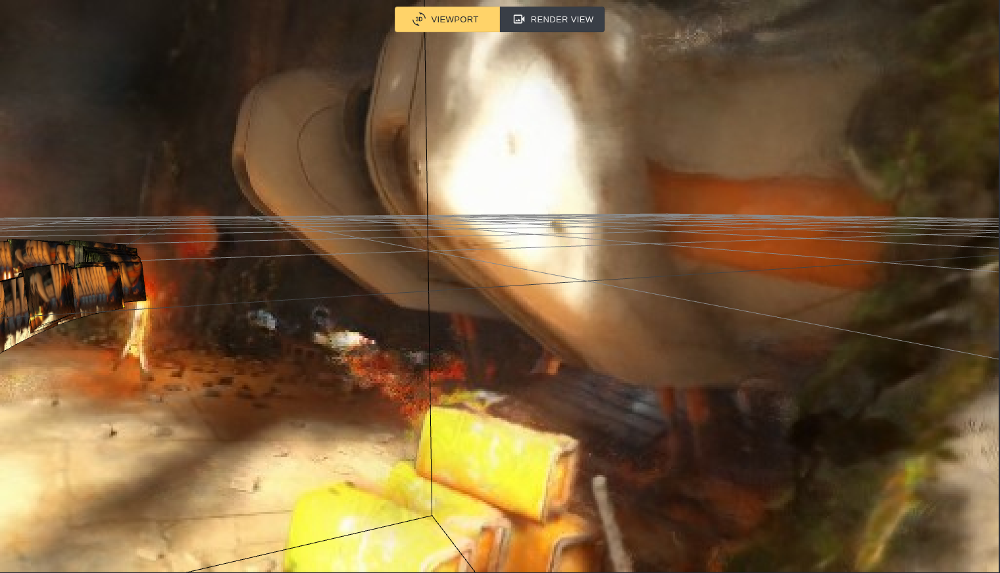

Connecting a Game Engine to NeRF-Studio
One of the current limitations of NeRF-Studio is the incompatibility with real-time rendering engines, due to the fact that the original research is not tuned to that purpose. It is majorly nontrivial; however, to create this compatibility bridge, and in consideration for the limitations and expansiveness of cloud compute decided to create NeRFBridge. As the design stands, NeRFBridge supports any mode of input, as long as the device can obtain pose information, capture image buffer, and support basic connectivity.
In this particular application, we made a couple core modifications to the existing NeRFStudio source code:
- Changing to
IterableDatasetunderneath the dataloader, so that NeRF-studio is not bottlenecked by the amount of GPU memory. - Adjusting the Cache Datamanager to synchronize the IterableDataset with TCP packets.
- Modifying the Dataloader to synchronize with TCP updates using condition variables.
StreamDatasetstoress the received files to disk and updatesDataManagerConfigOutputsaccordingly.- Adjusting the Stream DataParser to initialize camera configurations over TCP.
Design Choices and Detail Technical Approaches
The fundamental consideration when creating this design is the acknowledgement that services, and most likely future services related to NeRF, will definitely be offered from the cloud. This quickly narrowed out multiple designs that is local in implementation, as such as using a double-buffer implementation with shared memory. Within the same vein, the idea of embedding NeRF-studio into the game engine is unfavorable. By process of elimination, we needed an IPC implementation, and the only one that is fit for this kind of purpose is TCP (while we did initially pursue UDP as an option, we quickly realized having a reliable connection is more important than having a fast connection, and that the overhead of TCP is not as bad as we thought).
That leaves the actual process of synchronizing a neural network with a data-stream, which means our modifications to the source code underneath starts with substituting the Dataset implementaton with
IterableDataset, but we also introduces a synchronization concern -- the Pytorch NN will train in real time as the Dataset is updating, and so we would need to synchronize the datamanger and dataloader to not
feed the next batch of data until the underlying Dataset has syncrhonized with the TCP connection. Conditional Variables are built for this exact purpose, and so we would attach a mutex lock to the underlying dataset so that
while the asynchronous thread modifies the dataset from polling the TCP connection, the next batch of code will wait until the update is completed. This way, we can stall training in the right moments to inject new data into
our IterableDataset.
That concludes the design for the NeRFStudio server. The game engine, therefore, would act as a client that sends over data by capturing the framebuffer and sending it over the TCP connection. However, capturing the framebuffer every frame and sending that over a TCP connection is a terrible idea -- not only does the game engine need to wait for vsync so the image isn't mangled, but also that it triggers a gpu call to retrieve the final buffer. The idea is that we want to do this as minimally as possible, but enough to capture changes in the view so NeRF receives plenty of training data. Due to the fact that we have the camera's global transform, we can approximate this by checking if the transform of the camera is sufficiently different from the previous frame. For less priviledged framebuffer capture methods where this is not possible, this is best approximated with a compute shader that does entropy calculation with the previous captured frame, or even simpler, using velocity estimation. In our demo, since the character moves at a constant speed, we determined that sending a frame 3 times every second is sufficient for good performances.
As with the diagram shown above, the design is centered around data flow, considering that fundamentally this is a problem of synchronizing an ideal stream over ML training, and what we've observed is that with a game engine, the neural net almost fully converges in the first 10 seconds, which means that it is possible to query the neural net for distant scenery, considering That fundamentally the neural net is encoding and compressing memory about some environment.
There were a lot of challenges when we tried to implement this feature, including synchronization issues, as well as working with sockets and the communication protocol between the two processes. Obtaining some of the information about the camera of Godot is also not as straight forward, especially since some of the values are not directly reported by the game engine. The main challenge; however, is working with the existing code with NeRFstudio, since we have to figure out a way to fit the new features into the existing code base as to not break the training process.

At the end of the day, this means that we made the novel contribution of creating
nerfacto_stream which is a python module that can be imported into NeRFStudio, and the game engine can import nerfacto_client to connect to the server.
The server is a standalone process that can be run on any machine, and the client is a module that can be imported into any game engine.
This is similar to what LERF does, but with the added benefit of being able to use any game engine, and the added benefit of being able to use any input device.
We look forward to making an official Pull Request to the NeRFStudio repository soon, after we have cleaned up our codebase,
and we hope that this feature will be useful to the community.